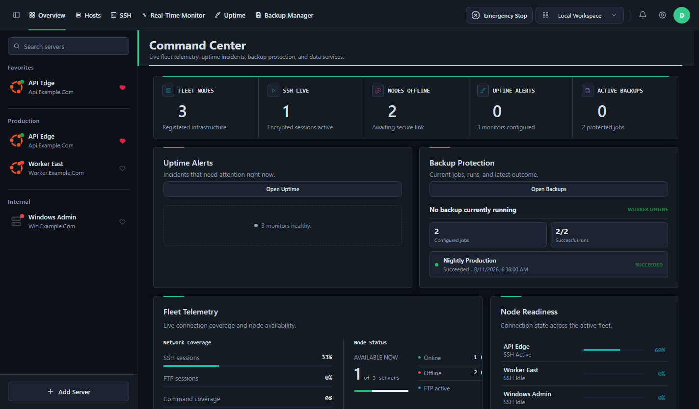

Command Center
- Fleet health overview
- Active operation status
- Grouped server inventory
- Emergency Stop control
DeployerX
Manage hosts, open SSH sessions, browse with SFTP, run repeatable deployments, monitor uptime, and protect backups from one local-first desktop workspace.

01 Capabilities
Register a host once, then move from access to observability and protection without switching between disconnected tools.
02 Workflow
Keep server context close to the work. Connections, commands, monitoring, and recovery stay attached to one operational workspace.
Organize Linux and Windows hosts into searchable groups and favorites.
Connect through SSH or SFTP, save commands, and inspect live server health.
Run deployments, watch uptime, verify backups, and interrupt active work when required.
operation.flow
secure session$ deploy production --verify
exit 003 Workspaces
Each workspace serves a focused job while sharing the server context needed for daily operations.
| Workspace | Connect | Operate | Observe | Protect |
|---|---|---|---|---|
| Hosts | Yes | Yes | Inventory | Profiles |
| SSH & SFTP | Yes | Terminal + files | Session state | Host keys |
| Real-Time Monitor | Via SSH | Processes | Live telemetry | Service checks |
| Uptime | HTTP / TCP | Maintenance | Incidents | Reports |
| Backup Manager | Repositories | Jobs | Run status | Recovery points |
| Command Center | Fleet state | Quick actions | Unified health | Backup status |
04 Comparison
Most alternatives solve one part of server work. DeployerX connects remote access, repeatable operations, observability, uptime, and recovery in the same desktop workspace.
| Capability | DeployerXServer operations | TermiusSSH client | MobaXtermRemote toolbox | CockpitLinux web admin | PortainerContainer control |
|---|---|---|---|---|---|
| Host inventory and groups | Included | Included | Included | ~Partial | ~Container endpoints only |
| SSH terminal | Included | Included | Included | Included | -Not a core feature |
| SFTP file management | Included | Included | Included | -Not a core feature | -Not a core feature |
| Saved commands and repeatable scripts | Included | Snippets included | ~Macros and commands | -Not a core feature | ~Container deployment workflows |
| Linux and Windows host workflows | Included | ~SSH targets | ~Remote protocol sessions | -Linux administration only | ~Container hosts only |
| Live host telemetry | Included | -Not a core feature | ~Remote monitoring bar | Included | ~Container and endpoint scope |
| HTTP, TCP and TLS uptime checks | Included | -Not a core feature | -Not a core feature | -Not a core feature | -Not a general uptime monitor |
| Incidents and maintenance windows | Included | -Not a core feature | -Not a core feature | -Not a core feature | -Not a core feature |
| Backup jobs and recovery points | Included | -Not a core feature | -Not a core feature | -Not an integrated backup manager | -Not a workload backup manager |
| VNC or remote desktop access | Included for compatible Windows hosts | -Not a core feature | Included | ~Virtual machine console scope | -Not a core feature |
| Optional synchronized workspace | Included | Encrypted vault sync included | -Not a core feature | -Not a core feature | ~Centralized server rather than optional desktop sync |
| Emergency stop for active operations | Included | -Not a core feature | -Not a core feature | -Not a core feature | -Not a core feature |
Different tools, different jobs. Termius is primarily an SSH client, MobaXterm is a Windows remote-access toolbox, Cockpit administers Linux systems through a web interface, and Portainer manages Docker and Kubernetes environments. A partial mark means the capability exists only for that product's narrower scope or through a related workflow.
Compared from publicly documented core features on August 12, 2026. Verify current capabilities on the official sites: Termius, MobaXterm, Cockpit, and Portainer.
05 Quick Start
Install DeployerX on Windows, macOS, or Linux, or run it from source. A hosted account is not required for a local workspace.
Choose Windows Setup, a macOS DMG, or a native Linux package.
Use the Windows portable app or Linux AppImage without a system install.
Some systems may warn about unsigned release artifacts. Verify that the file came from the official repository.
# Clone and run DeployerX
git clone https://github.com/me-devms/DeployerX.git
cd DeployerX
npm install
npm start06 Technology
A pragmatic desktop stack for secure connections, rich terminals, local data, remote files, and optional team workspaces.
SSH and MCP credentials are resolved inside the desktop main process. The authenticated MCP endpoint listens on 127.0.0.1 by default.
07 Local First
Use DeployerX without an account. Add a synchronized workspace only when a team or multi-device workflow needs it.
Server profiles, templates, settings, and operational data can remain on the current desktop user profile.
NO ACCOUNT REQUIREDConfigure a Firebase workspace for team membership and synchronized workspace data when the workflow calls for it.
OPT-IN WORKFLOWSensitive cloud values use authenticated encryption. SSH host-key checks and a loopback-only MCP endpoint reinforce local control.
SECURITY BY CONTEXT08 Releases
Faster remote file workflows, safer session lifecycle handling, and clearer server controls.
09 FAQ
Practical details about local mode, platforms, sync, security, and downloads.
No. Choose Local Workspace on first launch to work without a hosted backend or cloud account.
The current desktop release supports 64-bit Windows and Linux, plus Intel and Apple Silicon Macs.
Yes. Hosts can include Linux and Windows machines. Compatible Windows hosts can also use the embedded VNC workspace.
No. Firebase configuration is optional and is needed only for synchronized cloud workspace features.
Sensitive SSH values are encrypted before cloud storage with a key derived from the team passphrase. DeployerX cannot recover a lost passphrase.
Use Setup for a normal installation with shortcuts. Choose Portable when you want to run the application directly without installing it.
Current Windows release artifacts are unsigned. Confirm that the file came from the official DeployerX GitHub release page before running it.
10 Community
Inspect the source, report focused issues, and help make daily infrastructure work clearer and more reliable.
WAYS TO CONTRIBUTE
The people behind DeployerX
Built through code, testing, documentation, and focused issue reports.READY WHEN YOU ARE